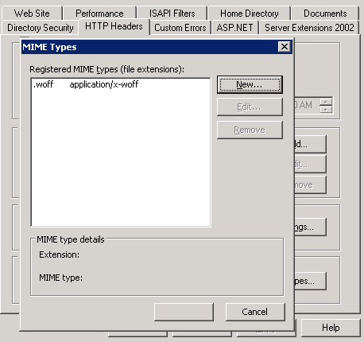

Why is @font-face throwing a 404 error on woff files?
I'm using @font-face on my company's site and it works/looks great. Except
Firefox and Chrome will throw a 404 error on the .woff file. IE does not
throw the error. I have the fonts located at the root but I've tried with the
fonts in the css folder and even giving the entire url for the font. If remove
those fonts from my css file I don't get a 404 so I know it's not a syntax
error.
Also, I used fontsquirrels tool to create the @font-face fonts and code:
@font-face { font-family: 'LaurenCBrownRegular'; src: url('/laurencb-webfont.eot'); src: local('☺'), url('/laurencb-webfont.woff') format('woff'), url('/laurencb-webfont.ttf') format('truetype'), url('/laurencb-webfont.svg#webfontaaFhOfws') format('svg'); font-weight: normal; font-style: normal; } @font-face { font-family: 'FontinSansRegular'; src: url('/fontin_sans_r_45b-webfont.eot'); src: local('☺'), url('/fontin_sans_r_45b-webfont.woff') format('woff'), url('/fontin_sans_r_45b-webfont.ttf') format('truetype'), url('/fontin_sans_r_45b-webfont.svg#webfontKJHTwWCi') format('svg'); font-weight: normal; font-style: normal; }
Answer
I was experiencing this same symptom - 404 on woff files in Chrome - and was running an application on a Windows Server with IIS 6.
If you are in the same situation you can fix it by doing the following:
Solution 1
"Simply add the following MIME type declarations via IIS Manager (HTTP Headers
tab of website properties): .woff application/x-woff "
Update: according to MIME Types for woff fonts and Grsmto the actual MIME
type is application/x-font-woff (for Chrome at least). x-woff will fix
Chrome 404s, x-font-woff will fix Chrome warnings.
As of 2017 : Woff fonts have now been standardised as part of the RFC8081
specification to the mime type font/woff and font/woff2.

Thanks to Seb Duggan: http://sebduggan.com/posts/serving-web-fonts-from-iis
Solution 2
You can also add the MIME types in the web config :
<system.webServer> <staticContent> <remove fileExtension=".woff" /> <!-- In case IIS already has this mime type --> <mimeMap fileExtension=".woff" mimeType="font/woff" /> </staticContent> </system.webServer>
Suggest
The answer to this post was very helpful and a big time saver. However, I
found that when using FontAwesome 4.50, I had to add an additional
configuration for woff2 type of extension also as shown below else requests
for woff2 type was giving a 404 error in Chrome's Developer Tools under
Console> Errors.
According to the comment by S.Serp, the below configuration should be put
within <system.webServer> tag.
<staticContent> <remove fileExtension=".woff" /> <!-- In case IIS already has this mime type --> <mimeMap fileExtension=".woff" mimeType="application/x-font-woff" /> <remove fileExtension=".woff2" /> <!-- In case IIS already has this mime type --> <mimeMap fileExtension=".woff2" mimeType="application/x-font-woff2" /> </staticContent>